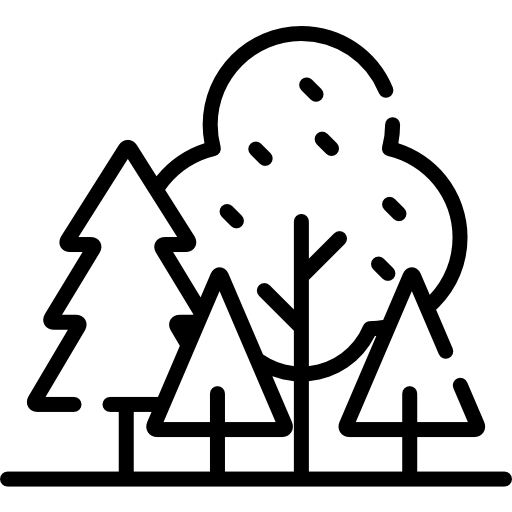

Lindenstock
- 65 min
-  Wald
- Feuer nicht empfohlen
- kein Feuerholz
-
 kein Trinkwasser
kein Trinkwasser
-
 kein Gewässer
kein Gewässer
- kein Unterstand
-
 kein Abfall
kein Abfall
Die ehemalige Abfalldeponie von Liestal wurde ab 1994 aufgeforstet und ist jetzt ein kleiner Hügel namens Lindenstock. Da der grösste Teil noch eine Wiese ist, hat man eine schöne Aussicht Richtung Basel. An einem der seltenen Schneetage ist die Stimmung besonders schön und es liegt immer deutlich mehr Schnee als im Vergleich zur Umgebung. Der Hinweg ist allerdings relativ lang für einen Schlittelhügel. Es hat ein Bänkli. Gleich daneben sind die eingezäunten Ausgasungsröhren aus dem inneren der Deponie.
Weg/Karte
Beim Chlöpfgatter vorbei den steilen Weg hinauf, dann rechts um den Lindenstock, bis linkerhand beim Informationsschild ein kleines Weglein hoch zum Lindenstock abbiegt.